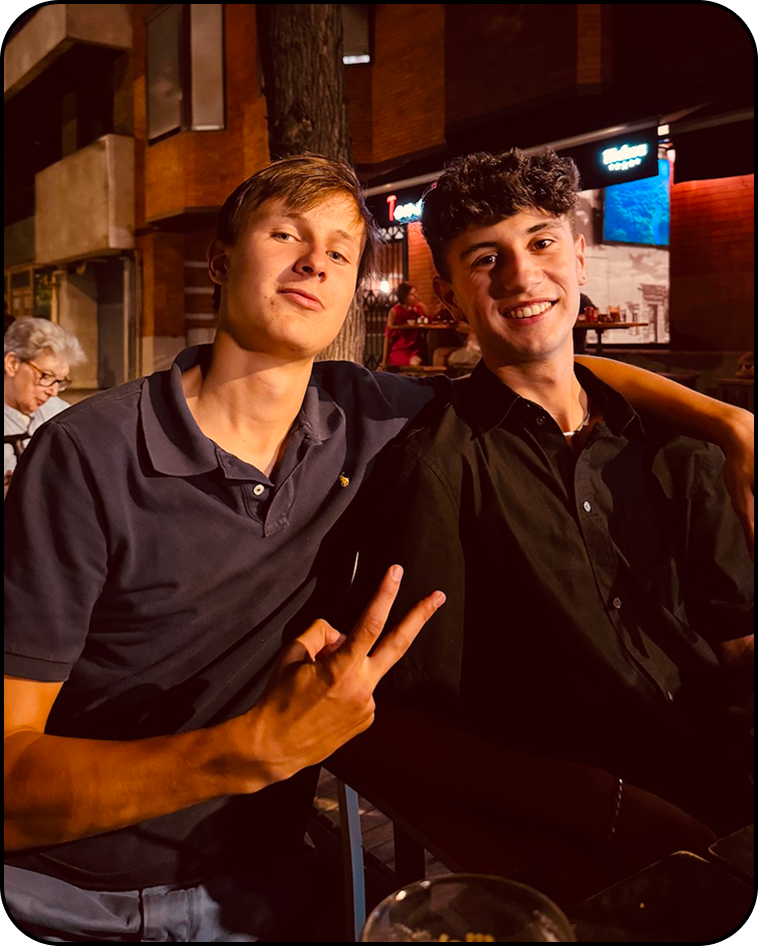
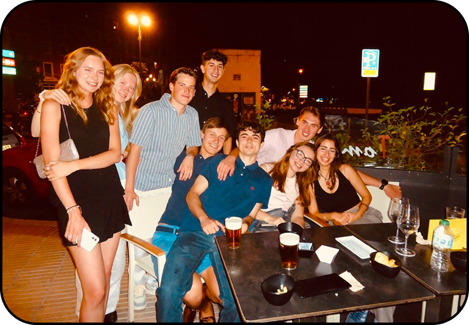

Sebastien, left, with Johannes, right. Taken across from the Templo de Debod.
During Summer 2025, I pursued a Foreign Language Acquisition Grant thru the University of Chicago to study in Madrid. During one of my nights out, I met a new friend named Sebastien, who happened to be an up-and-coming entrepreneur for his Belgian drone cleaning business called Next Level Drone Cleaning.
After speaking for a bit, I realized Sebastien and I were a great duo: I, a designer, was looking for new clients, and he, an entrepreneur, was looking for a fresh brand identity. The pairing was perfect, so we quickly got to work.

With friends enjoying a beautiful Spanish summer night, Sebastien and I situated in the middle of the picture.